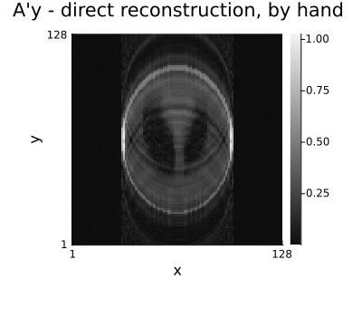
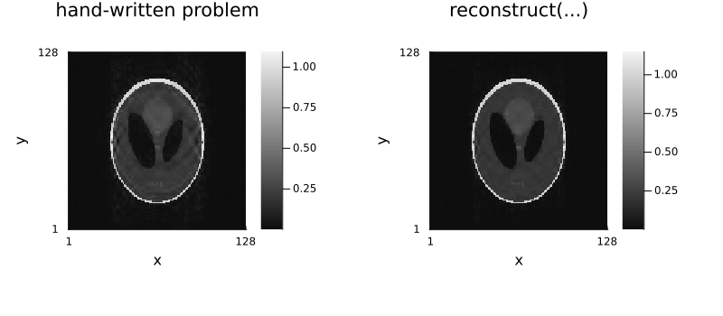
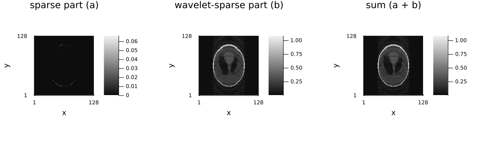
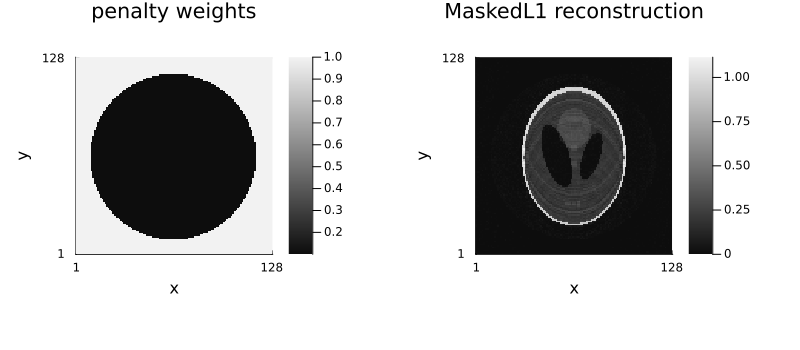
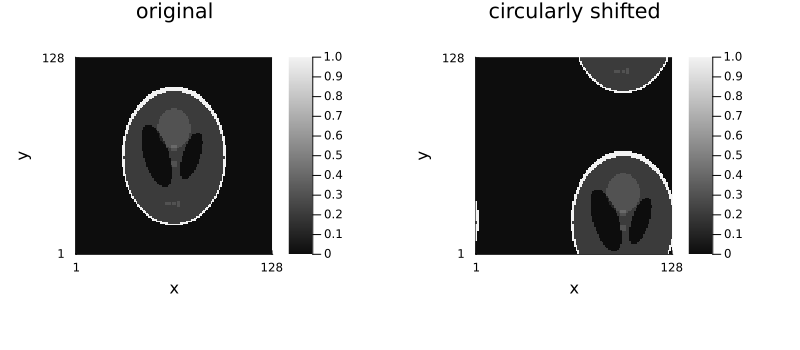
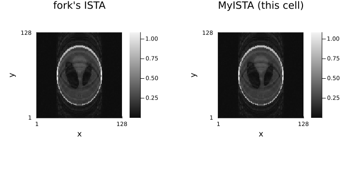

12 — The low-level interface
Download this tutorial as a Jupyter notebook (with NotebookUtils.jl next to it).
reconstruct is a convenience layer over three packages that can be driven directly: AbstractOperators.jl (linear operators), ProximalOperators.jl (proximal maps) and StructuredOptimization.jl (problem syntax + solvers). This tutorial opens the box.
Ristretto bundles these packages, with work not yet released upstream, so load them through it (using Ristretto.AbstractOperators), never with Pkg.add. Their own documentation, for the bundled versions: AbstractOperators, ProximalOperators, ProximalAlgorithms, StructuredOptimization.
Contents
- The encoding operator and its parts
- Adjoint and operator-norm checks
build_model— whatreconstructbuilds- Writing the optimization problem by hand
- Proximal operators directly
- Adding a regularizer of your own
- Adding an
AbstractOperators-compatible operator - Adding a proximal operator of your own
- Adding an algorithm of your own
using .NotebookUtils
using Ristretto
using Ristretto: get_encoding_operator, get_fourier_operator,
get_sensitivity_map_operator, get_subsampling_operator, build_model, materialize,
get_operator, get_affected_dims, calculate, Regularization, NamedDimsOp
using GeometricMedicalPhantoms: create_shepp_logan_phantom, MRISheppLoganIntensities
using MIRTjim: jim
using Plots
using Ristretto.AbstractOperators
using Ristretto.StructuredOptimization
using Ristretto.ProximalOperators
using ProximalCore
using Ristretto.ProximalAlgorithms
using Ristretto.WaveletOperators: WaveletOp, WT, wavelet
using LinearAlgebra
using Random
Random.seed!(0);1. The encoding operator and its parts
$\mathcal{A} = \mathcal{P}\,\mathcal{F}\,\mathcal{S}$: sensitivities, Fourier transform, sampling. Each factor is available separately, and they compose with *.
nx, ny, nc = 128, 128, 8
x_true = create_shepp_logan_phantom(nx, ny, :axial; ti = MRISheppLoganIntensities(), eltype = ComplexF32)
smaps = coil_sensitivities(nx, ny, nc)
pattern = create_sampling_pattern(
VariableDensitySampling(PolynomialDistribution(3), 4.0, 0.05), (nx, ny)
)
acq = AcquisitionInfo(;
is3D = false, image_size = (nx, ny), sensitivity_maps = smaps, subsampling = pattern
)
data = simulate_acquisition(x_true + 0.01f0 * randn(ComplexF32, nx, ny), acq; keep_sensitivity_maps = true)
𝒮 = get_sensitivity_map_operator(data)
ℱ = get_fourier_operator(data)
𝒫 = get_subsampling_operator(data)
𝒜 = get_encoding_operator(data)
for (name, op) in ("𝒮" => 𝒮, "ℱ" => ℱ, "𝒫" => 𝒫, "𝒜" => 𝒜)
println(rpad(name, 3), " : ", size(op, 2), " → ", size(op, 1))
end┌ Warning: simulate_acquisition: the phantom has the reconstruction's size 128×128, so the data are simulated with the operator that will reconstruct them (the inverse crime), and reconstructions look better than they would on measured data. Simulate from a finer, area-sampled phantom, e.g. 202×202; pass `inverse_crime_check = false` where the consistency is intended.
└ @ Ristretto ~/work/Ristretto.jl/Ristretto.jl/src/simulation/simulate_acquisition.jl:313
𝒮 : (128, 128) → (128, 128, 8)
ℱ : (128, 128, 8) → (128, 128, 8)
𝒫 : (128, 128, 8) → (128, 32, 8)
𝒜 : (128, 128) → (128, 32, 8)
# Composed by hand, the product reproduces the encoding operator.
𝒜_manual = 𝒫 * ℱ * 𝒮
y = data.kspace_data
println("‖𝒜ᴴy − (𝒫ℱ𝒮)ᴴy‖ / ‖𝒜ᴴy‖ = ", norm(𝒜' * y - 𝒜_manual' * y) / norm(𝒜' * y))
x_adj = 𝒜' * y
jim(x_adj; title = "A'y - direct reconstruction, by hand", size = (400, 350))
2. Adjoint and operator-norm checks
Three things worth knowing when you build or wrap operators yourself.
First, the FFT convention. Ristretto's Fourier operator is the fft/ifft pair, not the unitary one: the forward transform is unnormalized and ' carries the 1/(nx·ny) factor. So 𝒜' is the inverse-scaled adjoint, and the dot-product identity $\langle \mathcal{A}u, v\rangle = \langle u, \mathcal{A}^H v\rangle$ holds only up to that factor — as the ratio below shows. Multiply by nx*ny for the true Hermitian adjoint. (This is also why ‖𝒜‖ ≈ 1 rather than something of the order of the image size.)
u = randn(ComplexF32, nx, ny)
v = randn(ComplexF32, size(y)...)
lhs = dot(𝒜 * u, v)
rhs = dot(u, 𝒜' * v)
println("⟨𝒜u, v⟩ = ", lhs)
println("⟨u, 𝒜'v⟩ = ", rhs)
println("ratio = ", round(real(lhs / rhs), digits = 3), " (nx·ny = ", nx * ny, ")")⟨𝒜u, v⟩ = -14698.332f0 - 5634.5083f0im
⟨u, 𝒜'v⟩ = -0.8971145f0 - 0.34390342f0im
ratio = 16384.006 (nx·ny = 16384)
Second, a subtler way to break the same identity: density compensation. It does not apply to 𝒜 above (this tutorial's acquisition is Cartesian), but it is the sharpest illustration of "an operator that looks like an adjoint but isn't", so it is worth seeing directly on NFFTOperators.jl's NFFTOp, the operator behind every non-Cartesian 𝒜 (tutorial 8).
NFFTOp's dcf keyword only ever weights the adjoint direction (op' * y) — the forward direction (op * image) never sees it. Its default is dcf = nothing (no compensation), which is exactly what makes op' the true adjoint of op and the dot-product identity hold up to the FFT scaling above. Passing dcf = :auto (or an array) turns op' into a density-weighted approximate inverse instead — the fast way to get a reasonable-looking direct reconstruction from non-uniform samples, but no longer the mathematical adjoint, so the identity fails outright rather than by a fixed scale factor. This is why Ristretto's own encoding operators default to no density compensation (density_compensation is an explicit, opt-in preprocessing step, not something silently baked into 𝒜') — anything that assumes A' is the adjoint (operator-norm estimation via power iteration, CG/CGNR, the check above) needs the true adjoint, not an approximate inverse.
using Ristretto.NFFTOperators: NFFTOp
traj = Float32.(rand(2, 64, 32) .- 0.5f0) # a small throwaway radial-ish trajectory
𝒩_true_adjoint = NFFTOp((nx, ny), traj) # dcf = nothing (the default): op' is the true adjoint
𝒩_dcf = NFFTOp((nx, ny), traj, :auto) # dcf = :auto: op' is a density-weighted approximate inverse
u_n = randn(ComplexF32, nx, ny)
v_n = randn(ComplexF32, size(traj, 2), size(traj, 3))
for (label, 𝒩) in ("no DCF (dcf = nothing)" => 𝒩_true_adjoint, "DCF (dcf = :auto)" => 𝒩_dcf)
lhs_n = dot(𝒩 * u_n, v_n)
rhs_n = dot(u_n, 𝒩' * v_n)
println(
rpad(label, 24), ": ⟨Nu, v⟩ = ", round(lhs_n, digits = 3), " ⟨u, N'v⟩ = ",
round(rhs_n, digits = 3), " ratio = ", round(real(lhs_n / rhs_n), digits = 3)
)
end
# ⟨Nu, v⟩ is identical in both rows — the forward direction never uses dcf. Only ⟨u, N'v⟩ moves,
# and with DCF the ratio is nowhere near 1: the dot-product identity has failed, not just been
# rescaled.no DCF (dcf = nothing) : ⟨Nu, v⟩ = 1635.664f0 + 1236.606f0im ⟨u, N'v⟩ = 1635.662f0 + 1236.604f0im ratio = 1.0
DCF (dcf = :auto) : ⟨Nu, v⟩ = 1635.664f0 + 1236.606f0im ⟨u, N'v⟩ = 0.171f0 + 0.17f0im ratio = 8407.123
Third, the operator norm: it sets the step size of every proximal algorithm, so Ristretto asks for a value that is guaranteed not to fall below ‖𝒜‖ before each solve. estimate_opnorm pairs a power iteration, which converges to the norm from below, with opnorm_bound, a closed-form upper bound, and returns the upper end of that interval once it is within rel_margin.
L_est = AbstractOperators.estimate_opnorm(𝒜)
println("‖𝒜‖ (certified upper bound): ", round(L_est, digits = 5))
# `powerit` alone gives the lower end of the same interval: the accurate value, but never safe as
# a Lipschitz constant, because a truncated run always stops short of the norm.
L_lower = AbstractOperators.powerit(𝒜; maxit = 1000, rel_margin = 1.0e-10)
println("‖𝒜‖ (converged from below): ", round(L_lower, digits = 5))‖𝒜‖ (certified upper bound): 1.0
‖𝒜‖ (converged from below): 1.0
3. build_model — what reconstruct builds
build_model returns the StructuredOptimization problem reconstruct would solve, so you can inspect it, hand it to a solver yourself, or modify it.
terms = build_model(𝒜, y, (L1Wavelet2D(2.0f-3),))
for t in terms
println(t)
endls(𝒜 * x - y)
0.002 ⋅ ‖𝒲x‖₁
# The variant that also returns the variables is what you need when a regularizer introduces
# auxiliary variables of its own (`TotalGeneralizedVariation2D` does): the image is then not at a
# predictable position in the solver's variable tuple.
terms_tgv, x_var, auxiliaries = Ristretto.build_model_with_variables(
𝒜, y, (TotalGeneralizedVariation2D(1.0f-3),)
)
println("image variable: ", size(~x_var))
println("auxiliary variables: ", length(auxiliaries), " → ", map(a -> size(~a), auxiliaries))image variable: (128, 128)
auxiliary variables: 1 → ((16384, 2),)
4. Writing the optimization problem by hand
Variable, ls, norm and @minimize are the whole syntax. Below is the compressed-sensing problem of tutorial 1, written out.
𝒲 = WaveletOp(ComplexF32, wavelet(WT.db4), (nx, ny))
v = Variable(copy(x_adj)) # warm start from the direct reconstruction
λ = 2.0f-3
x̂, iterations = @minimize ls(𝒜 * v - y) + λ * norm(𝒲 * v, 1) with FISTA(maxit = 60, verbose = false)
println("converged in ", iterations, " iterations")
nrmse(x) = norm(abs.(x) - abs.(x_true)) / norm(abs.(x_true))
println("hand-written NRMSE: ", round(nrmse(~x̂), digits = 4))
x_api = reconstruct(data, IterativeReconstruction(L1Wavelet2D(λ); maxit = 60))
println("`reconstruct` NRMSE: ", round(nrmse(x_api), digits = 4))
# The two are the same problem but not the same run: `reconstruct` also scales the data, hands
# FISTA a Lipschitz-constant hint from ‖𝒜‖ and applies its own relative stopping rule, which is
# worth a visible amount of accuracy at a fixed iteration count.
jim(
jim(~x̂; title = "hand-written problem"),
jim(x_api; title = "reconstruct(...)");
layout = (1, 2), size = (800, 350)
)
# Two variables, two priors, summed into one image: `a` is penalized by plain image-domain ℓ1
# (sparse pixels) and `b` by wavelet-domain ℓ1 (sparse wavelet coefficients). This is the same
# additive, multi-variable syntax tutorial 7's L+S model uses — but not the same model: L+S there
# is low-rank (nuclear norm of the space × time Casorati matrix) plus sparse, which needs several
# time frames to have a matrix to be low rank across; a single static image does not. Here both
# terms are ℓ1, just in different domains, so the point is the *syntax* — `@minimize` accepts any
# number of `Variable`s and sums their terms — not a claim that this decomposition is meaningful
# on its own.
a = Variable(zeros(ComplexF32, nx, ny))
b = Variable(copy(x_adj))
(â, b̂), it2 = @minimize ls(𝒜 * (a + b) - y) + 5.0f-3 * norm(a, 1) + 1.0f-3 * norm(𝒲 * b, 1) with FISTA(maxit = 40, verbose = false)
frac_small(x, tol) = count(<(tol), abs.(x)) / length(x)
println("iterations: ", it2, ", NRMSE of the sum: ", round(nrmse(~â + ~b̂), digits = 4))
println(
" a (image-domain ℓ1): ", round(100 * frac_small(~â, 1.0f-3 * maximum(abs, ~â)), digits = 1),
"% near-zero pixels"
)
println(
" b (wavelet-domain ℓ1): ",
round(100 * frac_small(𝒲 * ~b̂, 1.0f-3 * maximum(abs, 𝒲 * ~b̂)), digits = 1),
"% near-zero wavelet coefficients"
)
jim(
jim(~â; title = "sparse part (a)"),
jim(~b̂; title = "wavelet-sparse part (b)"),
jim(~â + ~b̂; title = "sum (a + b)");
layout = (1, 3), size = (1100, 330)
)
# `problem` + `solve` is the non-macro form, and lets you inspect what a given solver expects.
p = problem(ls(𝒜 * v - y), λ * norm(𝒲 * v, 1))
alg, kwargs, variables = StructuredOptimization.parse_problem(p, FISTA())
println("keys prepared for FISTA: ", keys(kwargs))keys prepared for FISTA: [:f, :g]
5. Proximal operators directly
Every regularizer is ultimately a proximal map. They can be evaluated on their own, which is the quickest way to understand what a term does — and to test a new one.
z = randn(ComplexF32, 8, 8)
γ = 0.5
f = NormL1(0.3)
p_l1 = similar(z)
value = prox!(p_l1, f, z, γ)
println("NormL1: value at the prox point = ", round(value, digits = 4))
println("soft thresholding by γλ = ", γ * 0.3, ":")
println(" |z| ", round.(abs.(z[1:4, 1]), digits = 3))
println(" |prox| ", round.(abs.(p_l1[1:4, 1]), digits = 3))NormL1: value at the prox point = 14.6574
soft thresholding by γλ = 0.15:
|z| Float32[1.509, 0.894, 0.709, 0.565]
|prox| Float32[1.359, 0.744, 0.559, 0.415]
# The nuclear norm shrinks singular values instead of entries.
M = randn(ComplexF32, 16, 6)
p_nuc = similar(M)
prox!(p_nuc, NuclearNorm(0.8), M, 1.0)
println("singular values before: ", round.(svdvals(M)[1:6], digits = 3))
println("singular values after: ", round.(svdvals(p_nuc)[1:6], digits = 3))singular values before: Float32[5.239, 4.393, 3.678, 3.359, 2.168, 1.887]
singular values after: Float32[4.439, 3.593, 2.878, 2.559, 1.368, 1.087]
# Ristretto's regularizers expose the same thing through `calculate` (the value) and `get_operator`
# (the transform), which is what the extension interface is built on.
reg = L1Wavelet2D(2.0f-3)
println("value of the term at x_true: ", round(calculate(reg, x_true), digits = 4))
println("its operator: ", typeof(get_operator(reg, x_true)).name.name)
println("dimensions it couples: ", get_affected_dims(reg, nothing, (:x, :y, :slice)))value of the term at x_true: 1.4142
its operator: WaveletOp
dimensions it couples: (:x, :y)
6. Adding a regularizer of your own
A regularizer is a struct <: Regularization plus three methods:
get_operator(reg, x; threaded)— the linear transform it penalizes.materialize(reg, x::Variable; threaded)— theStructuredOptimization.Term.get_affected_dims(reg, dimspec, image_dims)— which image dimensions it couples (this is what decides whether task splitting still applies across slices).
Optionally scale_regularization (if the term is homogeneous, so that data scaling can adjust λ), bind_dimensions (if it is parameterized by a dimension name) and materialize_with_auxiliaries (if it introduces extra optimization variables).
Here is a spatially weighted ℓ₁ penalty: sparsity enforced only outside a region of interest, which is a crude way of saying "I know where the object is".
struct MaskedL1{T, W} <: Regularization
λ::T
weights::W
end
# The penalty is element-wise, so the operator is the identity and the spatial weights ride along
# in the proximal function (`NormL1` accepts an array of weights).
Ristretto.get_operator(reg::MaskedL1, x::AbstractArray; threaded::Bool = true) =
Eye(eltype(x), size(x))
# The `::Nothing` slot is the dimension specification a dimension-parameterized regularizer would
# use; an element-wise penalty couples nothing, so it returns an empty tuple.
Ristretto.get_affected_dims(::MaskedL1, ::Nothing, image_dims) = ()
# ℓ₁ is homogeneous of degree one, so λ scales linearly with the data scaling.
Ristretto.scale_regularization(reg::MaskedL1, factor::Real) =
MaskedL1(reg.λ * factor, reg.weights)
function Ristretto.materialize(reg::MaskedL1, x::Variable{T}; threaded::Bool) where {T}
op = get_operator(reg, ~x; threaded)
Γ = real(T).(reg.λ .* reg.weights)
return StructuredOptimization.Term(1, NormL1(Γ), op * x, "‖Γ .* x‖₁")
end# Weight the background 10× more heavily than the object.
radius = [sqrt((i - nx / 2)^2 + (j - ny / 2)^2) for i in 1:nx, j in 1:ny]
weights = Float32.(ifelse.(radius .< 0.42nx, 0.1, 1.0))
x_masked = reconstruct(data, IterativeReconstruction(MaskedL1(5.0f-3, weights); maxit = 60))
println("MaskedL1 NRMSE: ", round(nrmse(x_masked), digits = 4))
println("plain L1Image: ", round(nrmse(reconstruct(data, IterativeReconstruction(L1Image(5.0f-3); maxit = 60))), digits = 4))
jim(
jim(weights; title = "penalty weights"),
jim(x_masked; title = "MaskedL1 reconstruction");
layout = (1, 2), size = (800, 350)
)
(Down-weighting the object means less regularization where the signal is, so this particular prior is worse than plain L1Image on this phantom. The point is the interface: a fifteen-line regularizer drops straight into reconstruct, data scaling, algorithm selection and task splitting.)
# It works through the whole stack: `calculate` evaluates it, and task splitting still applies
# across batch dimensions because `get_affected_dims` says it couples nothing.
println("value at x_true: ", round(calculate(MaskedL1(5.0f-3, weights), x_true), digits = 4))
println("affected dims: ", get_affected_dims(MaskedL1(5.0f-3, weights), nothing, (:x, :y, :slice)))value at x_true: 0.6054
affected dims: ()
7. Adding an AbstractOperators-compatible operator
The encoding operator itself, 𝒜 = 𝒫ℱ𝒮, is built from AbstractOperators.AbstractOperators — the same interface a custom operator implements. The contract is small:
struct MyOp <: LinearOperatorcarrying whatever the operator needs (here, a fixed pixel shift).Base.size(L::MyOp)—(codomain_size, domain_size), matrix convention.LinearAlgebra.mul!(y, L::MyOp, x)— the forward map, in place.Base.adjoint(L::MyOp)(or anAdjointOperatorwrapper with its ownmul!) — the adjoint map, also in place.
Optionally, the property traits from properties.jl — is_linear, is_AcA_diagonal, is_AAc_diagonal, diag_AcA, is_orthogonal, is_full_row_rank and friends — which is how a solver decides whether it can use the operator without applying it: is_AAc_diagonal is what lets HardConsistency project in closed form (§2.2 of tutorial 11), and an orthogonal operator skips the operator-norm power iteration entirely (estimate_opnorm returns 1 directly).
A circular pixel shift is a clean example: it is exactly invertible (shift back), its adjoint is its inverse (shifting is a permutation, so L'L = I), and it needs no operator-norm estimate at all — properties worth declaring explicitly rather than leaving for the generic, more expensive fallbacks (get_normal_op(L) = L' * L, opnorm(L) = powerit(L)) to rediscover.
The adjoint is the part that is easy to get wrong. L' does not build a new operator: the generic Base.adjoint(L::AbstractOperator) wraps L in an AdjointOperator, and it is the second mul! method — mul!(y, ::AdjointOperator{<:MyOp}, b) — that says what the adjoint does. Every operator in AbstractOperators is written this way, and a custom one has to supply both halves; there is no automatic transpose to fall back on.
struct CircShift{T, N} <: LinearOperator
dim::NTuple{N, Int}
offset::NTuple{N, Int}
end
CircShift(::Type{T}, dim::NTuple{N, Int}, offset::NTuple{N, Int}) where {T, N} = CircShift{T, N}(dim, offset)
Base.size(L::CircShift) = (L.dim, L.dim) # square: same shape in and out
AbstractOperators.domain_type(::CircShift{T}) where {T} = T
AbstractOperators.codomain_type(::CircShift{T}) where {T} = T
# The forward map.
function LinearAlgebra.mul!(y::AbstractArray, L::CircShift, x::AbstractArray)
y .= circshift(x, L.offset)
return y
end
# The adjoint map: shifting is a permutation matrix, so its transpose is its inverse — the shift
# in the opposite direction. `L.A` reaches the wrapped operator inside the `AdjointOperator`.
function LinearAlgebra.mul!(y::AbstractArray, L::AbstractOperators.AdjointOperator{<:CircShift}, b::AbstractArray)
y .= circshift(b, .-(L.A.offset))
return y
end
# Properties: exactly orthogonal, so L'L = AAc = I, and the operator norm is 1 without an
# estimate.
AbstractOperators.is_linear(::CircShift) = true
AbstractOperators.is_orthogonal(::CircShift) = true
AbstractOperators.is_AcA_diagonal(::CircShift) = true
AbstractOperators.diag_AcA(::CircShift{T}) where {T} = one(real(T))
AbstractOperators.is_AAc_diagonal(::CircShift) = true
AbstractOperators.diag_AAc(::CircShift{T}) where {T} = one(real(T))𝒞shift = CircShift(ComplexF32, (nx, ny), (nx ÷ 4, -ny ÷ 3)) # a quarter of the FOV, so the shift is visible
shifted = 𝒞shift * x_true
back = 𝒞shift' * shifted
println("round trip error (should be 0): ", norm(back - x_true))
println("adjoint == inverse (orthogonal op): ", norm(𝒞shift' * (𝒞shift * x_true) - x_true))
println("‖𝒞shift‖ without power iteration: ", AbstractOperators.estimate_opnorm(𝒞shift))
jim(
jim(x_true; title = "original"),
jim(shifted; title = "circularly shifted");
layout = (1, 2), size = (800, 350)
)
8. Adding a proximal operator of your own
A proximal function needs three things: a callable that returns its value, a prox! that writes the proximal point in place and returns the value there, and the is_* traits a parser consults (is_proximable, is_convex, and so on — §1 of this tutorial reads get_assumptions off exactly these).
To check a from-scratch implementation actually is the right proximal operator rather than just plausible code, re-derive NormL1 — whose closed form (soft thresholding) is well known — independently, and confirm it agrees with the fork's own NormL1 bit for bit.
struct MyNormL1{T}
λ::T
end
ProximalCore.is_proximable(::Type{<:MyNormL1}) = true
ProximalCore.is_convex(::Type{<:MyNormL1}) = true
(f::MyNormL1)(x) = f.λ * sum(abs, x)
function ProximalCore.prox!(y, f::MyNormL1, x, γ)
τ = f.λ * γ
y .= sign.(x) .* max.(abs.(x) .- τ, 0)
return f(y)
endz_test = randn(ComplexF32, 200)
γ_test = 0.7
λ_test = 0.4f0
y_mine = similar(z_test)
val_mine = ProximalCore.prox!(y_mine, MyNormL1(λ_test), z_test, γ_test)
y_fork = similar(z_test)
val_fork = prox!(y_fork, NormL1(λ_test), z_test, γ_test)
println("prox points agree: ", y_mine ≈ y_fork)
println("values agree: ", val_mine ≈ val_fork, " (", round(val_mine, digits = 4), " vs ", round(val_fork, digits = 4), ")")prox points agree: true
values agree: true (53.0313 vs 53.0313)
Dropping MyNormL1 into a reconstruction needs no further wiring — materialize for any regularizer just needs to produce a StructuredOptimization.Term built from some proximal function, and the parser only ever inspects the is_* traits, never the concrete type. Doing that by hand (rather than through @minimize's DSL, which recognizes norm(·, 1) specially but not an arbitrary callable) is exactly StructuredOptimization.Term(coeff, f, operator*x), the same constructor MaskedL1's materialize used in §6.
v_custom = Variable(copy(x_adj))
term_custom = StructuredOptimization.Term(1, MyNormL1(5.0f-3), Eye(ComplexF32, (nx, ny)) * v_custom)
p_custom = problem(ls(𝒜 * v_custom - y), term_custom)
x̂_custom, _ = solve(p_custom, FISTA(maxit = 60, verbose = false))
x_mynorm = reconstruct(
data,
IterativeReconstruction(L1Image(5.0f-3); maxit = 60) # Ristretto's own L1Image, for reference
)
println("Ristretto's L1Image NRMSE: ", round(nrmse(x_mynorm), digits = 4))
println("hand-written MyNormL1: ", round(nrmse(~v_custom), digits = 4))Ristretto's L1Image NRMSE: 0.059
hand-written MyNormL1: 0.0585
9. Adding an algorithm of your own
An algorithm is not registered with Ristretto at all. It is a plain iterator following ProximalAlgorithms' protocol, plus one declaration — get_assumptions — that says which model shapes it can solve. Ristretto reads that declaration off whatever type it is handed (DEFAULT_ALGORITHMS in tutorial 6 §1 is the same mechanism), so an algorithm written in a tutorial cell is a legal algorithm = argument the moment it exists.
The protocol has five parts:
- An iteration type holding the problem (
f,g,x0) and the algorithm's parameters. - A state type, mutated in place, so an iteration allocates nothing per step.
Base.iterate(iter)andBase.iterate(iter, state)— the first sets the state up, the second advances it by one step. The iterator is infinite; stopping is the caller's business.default_stopping_criterion/default_solution/default_iteration_summary— how to stop, what to hand back, what to print.default_solutionis also what Ristretto'son_iterationcallback sees.get_assumptions— the model shape, as a set of terms and the traits each must satisfy.
ISTA is the smallest complete example: one gradient step on the smooth term, one prox on the other. Everything below is written from scratch and then checked against the fork's own ISTA, which is the only honest way to know a from-scratch implementation is right.
using Ristretto.ProximalAlgorithms: IterativeAlgorithm, AssumptionGroup, SimpleTerm, get_assumptions,
value_and_gradient, lower_bound_smoothness_constant, default_display
using ProximalCore: is_smooth, is_convex, is_proximable
# 1. The iteration: the problem, plus a step size (or the Lipschitz constant to derive it from).
Base.@kwdef struct MyISTAIteration{Tx, Tf, Tg, TLf, Tgamma}
f::Tf = ProximalCore.Zero()
g::Tg = ProximalCore.Zero()
x0::Tx
Lf::TLf = nothing
gamma::Tgamma = Lf === nothing ? nothing : 1 / Lf
end
Base.IteratorSize(::Type{<:MyISTAIteration}) = Base.IsInfinite()
# 2. The state. `res = x - z` is the fixed-point residual: it is what the stopping rule reads.
mutable struct MyISTAState{R, Tx}
x::Tx # current iterate
y::Tx # forward (gradient-step) point
z::Tx # forward-backward point
res::Tx # x - z
grad::Tx # gradient of f at x
gamma::R # step size
f_x::R # value of f at x
g_z::R # value of g at z
end# 3a. Setting up: one gradient step, one prox, and a step size if none was supplied.
function Base.iterate(iter::MyISTAIteration)
x = copy(iter.x0)
R = real(eltype(x))
f_x, grad = value_and_gradient(iter.f, x)
gamma = iter.gamma === nothing ?
1 / lower_bound_smoothness_constant(iter.f, I, x, grad) : iter.gamma
y = x .- gamma .* grad
z, g_z = ProximalCore.prox(iter.g, y, gamma)
state = MyISTAState(x, y, z, x .- z, copy(grad), R(gamma), R(f_x), R(g_z))
return state, state
end
# 3b. One step: swap the buffers (the previous z becomes the new x), re-evaluate, prox again.
function Base.iterate(iter::MyISTAIteration, state::MyISTAState{R}) where {R}
state.x, state.z = state.z, state.x
f_x, grad = value_and_gradient(iter.f, state.x)
state.f_x = R(f_x)
state.grad .= grad
state.y .= state.x .- state.gamma .* state.grad
state.g_z = R(ProximalCore.prox!(state.z, iter.g, state.y, state.gamma))
state.res .= state.x .- state.z
return state, state
end
# 4. Stopping, solution and display.
ProximalAlgorithms.default_stopping_criterion(tol, ::MyISTAIteration, state::MyISTAState) =
norm(state.res, Inf) / state.gamma <= tol
ProximalAlgorithms.default_solution(::MyISTAIteration, state::MyISTAState) = state.z
ProximalAlgorithms.default_iteration_summary(it, ::MyISTAIteration, state::MyISTAState) =
("" => it, "γ" => state.gamma, "f(x)" => state.f_x, "g(z)" => state.g_z)
# The user-facing constructor: `IterativeAlgorithm` wraps the iteration with the loop that runs it.
MyISTA(;
maxit = 10_000,
tol = 1.0e-8,
stop = (iter, state) -> ProximalAlgorithms.default_stopping_criterion(tol, iter, state),
solution = ProximalAlgorithms.default_solution,
verbose = false,
freq = 100,
summary = ProximalAlgorithms.default_iteration_summary,
display = default_display,
kwargs...,
) = IterativeAlgorithm(MyISTAIteration; maxit, stop, solution, verbose, freq, summary, display, kwargs...)
# 5. The declaration Ristretto's solver selection reads: a smooth convex term plus a proximable convex
# one. This is exactly what ISTA can solve, and no more — declaring anything wider here would
# let Ristretto hand this algorithm a model it cannot minimize.
ProximalAlgorithms.get_assumptions(::Type{<:MyISTAIteration}) = AssumptionGroup(
SimpleTerm(:f => (is_smooth, is_convex)),
SimpleTerm(:g => (is_proximable, is_convex))
)
println("MyISTA: ", get_assumptions(MyISTA()))
println("ISTA: ", get_assumptions(ISTA()))MyISTA: f(x) + g(x) where f is_smooth, and is_convex; and g is_proximable, and is_convex
ISTA: f(x) + g(x) where f is_locally_smooth; and g is_proximable
Both declarations are the same, which is the check that matters before running anything: Ristretto will accept MyISTA() for exactly the models it accepts ISTA() for.
Now the numerical check. Same data, same regularizer, same iteration count, one solver against the other — a from-scratch ISTA that is correct must track the fork's to solver tolerance.
x_myista = reconstruct(
data, IterativeReconstruction(L1Wavelet2D(2.0f-3); algorithm = MyISTA(), maxit = 60, reltol = 0.0)
)
x_ista = reconstruct(
data, IterativeReconstruction(L1Wavelet2D(2.0f-3); algorithm = ISTA(), maxit = 60, reltol = 0.0)
)
println("MyISTA NRMSE: ", round(nrmse(x_myista), digits = 4))
println("fork's ISTA NRMSE: ", round(nrmse(x_ista), digits = 4))
println("relative difference: ", round(norm(unname(x_myista) - unname(x_ista)) / norm(unname(x_ista)), sigdigits = 3))
side_by_side(
x_ista, x_myista; titles = ("fork's ISTA", "MyISTA (this cell)"), size = (750, 350)
)
The same protocol is what lets an algorithm the vendored fork already ships, but that DEFAULT_ALGORITHMS does not list, be used without any Ristretto-side change — ZeroFPR, a quasi-Newton accelerated proximal-gradient method, declares the same model shape:
using Ristretto.ProximalAlgorithms: ZeroFPR, ZeroFPRIteration
println("ZeroFPR: ", get_assumptions(ZeroFPR()))
x_zerofpr = reconstruct(
data, IterativeReconstruction(L1Wavelet2D(2.0f-3); algorithm = ZeroFPR(), maxit = 60)
)
println("FISTA NRMSE: ", round(nrmse(x_api), digits = 4))
println("ZeroFPR NRMSE: ", round(nrmse(x_zerofpr), digits = 4))ZeroFPR: f(Ax) + g(x) where f is_smooth; and A is_linear; and g is_proximable
FISTA NRMSE: 0.1013
ZeroFPR NRMSE: 0.0973
Nothing in Ristretto had to change in either case: get_assumptions is read off the type Ristretto is handed, so any ProximalAlgorithms-shaped iteration — the package's own, or one written in a tutorial cell — plugs into the same solver selection DEFAULT_ALGORITHMS uses, with no registration step.
Further reading
What the operators in this tutorial stand for physically, from Questions and Answers in MRI:
- What is k-space? — the codomain of $\mathcal{F}$.
- k-space: trajectories — what the NFFT operator's trajectory argument describes.
- Parallel imaging — what $\mathcal{S}$ models.
Lectures and tutorials elsewhere:
- N. Parikh, S. Boyd, Proximal algorithms, Foundations and Trends in Optimization 2014 — proximal operators, their calculus and a catalog of closed forms, for §5 and §8.
- L. Vandenberghe's ECE236C slides on the proximal mapping.
Environment
print_versions()Julia Version 1.13.3
Commit 67ac47b9cd8 (2026-10-25 15:28 UTC)
Build Info:
Official https://julialang.org release
Platform Info:
OS: Linux (x86_64-linux-gnu)
CPU: 4 × AMD EPYC 7763 64-Core Processor
WORD_SIZE: 64
LLVM: libLLVM-20.1.8 (ORCJIT, znver3)
GC: Built with stock GC
Threads: 4 default, 1 interactive, 4 GC (on 4 virtual cores)
Environment:
JULIA_PKG_SERVER_REGISTRY_PREFERENCE = eager
JULIA_NUM_THREADS = 4
Ristretto 0.1.0 (dev)
AbstractOperators not loaded
FFTWOperators not loaded
NFFTOperators not loaded
WaveletOperators not loaded
DSPOperators not loaded
ContourletOperators not loaded
StructuredOptimization not loaded
ProximalOperators not loaded
ProximalAlgorithms not loaded
OperatorCore not loaded
NestedThreading 0.1.3